Day8前半｜ターゲット・ペルソナ・USP・ブランディング超入門
ここからは「きれいに作る」だけではなく、誰に・何を・なぜ届けるのかを決める授業。パソコンやマーケティングが苦手でも、順番どおりに「相手 → 悩み → 強み → 約束 → Canva」の流れで考えれば迷いにくい。
SCENE 03｜デザインを始める前に、まず相手を決める
麗日お茶子初心者の疑問
せっかく作るなら、できるだけ全員に見てもらった方がええんちゃう？
緑谷出久かみ砕き役
実は逆なんだ。最初に「一番届けたい相手」を決めると、言葉・色・値段・見せ方まで一本につながるよ。
超かんたんに言うと、「みんな向け」より「この人向け」の方が伝わりやすい。爆豪勝己一言まとめ
いきなりCanvaを開くな！ 先に「誰に届けるか」を決めろ！
① 相手を決めるターゲットとペルソナで「誰のためか」をはっきりさせる。
② 選ばれる理由を作るUSPで「この人に頼む意味」を相手目線の価値に変える。
③ Canvaへ落とす名刺・チラシ・SNSに、ターゲットとUSPが見える形で配置する。
1. ターゲットとは「一番届けたい相手」
ターゲットは商品やサービスを一番届けたい相手のグループ。「できるだけ多くの人」ではなく、悩みや状況が似ている人を具体的にする。
① 誰の悩みを解決する？年齢・性別・悩み・自分の経験や得意分野を手がかりにする。
② 今なにに困っている？時間不足、お金不足、知識不足、不安など、相手の困りごとを見る。
③ 自分は何を提供できる？知識・経験・商品・サービスと相手の悩みが重なる所を探す。
初心者のよくある失敗：「誰にでも届けたい」は、言葉もデザインも薄くなりやすい。まず1人に近い具体的な相手を想像する。

ターゲット＝一番届けたい相手。相手が決まると、言葉・デザイン・価格・宣伝の方向が決まりやすい。
2. ペルソナ｜ターゲットの中から「具体的な1人」を深掘りする
ターゲットが大きなグループなら、ペルソナはその中の具体的な1人。名前や年齢だけではなく、価値観・行動・悩み・選ぶ理由まで考える。
サイコグラフィック価値観、考え方、興味、行動傾向。
インサイト本質的な課題や、「なぜそう行動するのか」という理由。
もっと深掘りする6つの質問
- 課題：何を解決したい？
- ペイン：何が邪魔している？
- シチュエーション：いつ・どこで・どんな制約がある？
- オルタナティブ：今は何で代用している？
- バジェット：いくらなら払える？
- 情報源：どこで情報を集める？
作り方：新規サービスなら仮のペルソナを作って検証。既存サービスなら顧客データ・購買理由・アンケートから整理する。

ペルソナは「名前と年齢」だけで終わらせず、心理・行動・課題まで理解するための地図。
3. USP｜「それならあなたを選ぶ」と思ってもらう理由
USP（Unique Selling Proposition）は独自の売り・強み・選ばれる理由。大事なのは自分の自慢ではなく、相手にとってどんな価値があるか。
USPがないと違いが伝わらず「どこでも同じ」と見られ、価格だけで比べられやすい。
USPは自慢ではない「経験10年」だけでなく、それによって相手がどう助かるかまで変換する。
良いUSPは短い「〇〇な人のための△△サービス」のように、一言で方向が分かる形を目指す。
USPの3ステップ
- 誰に向けるか決める。
- 相手の本当の悩みを探す。
- 自分がどう解決できるかを考える。

USP＝「独自の売り」ではあるが、中心は相手が選ぶ理由。価格競争から抜け出すための軸になる。
4. USPを言葉にする｜強みを「伝わる約束」へ変換する
自分の強みをそのまま並べても相手には伝わりにくい。「誰に」「何を」「どう助ける」を1文にする。
材料を集める誰に届けたい？ どんな悩み？ 自分の強みは？ を書き出す。
価値へ変換知識→分かりやすい説明、経験→失敗しにくい提案、速さ→急ぎでも助かる、のように変える。
1文にする「〇〇な人のための、△△できる□□」の形で短くする。

材料 → 相手目線の価値 → 1文テンプレ → 深掘り → 完成チェック、の順で言語化する。
5. 強みを価値に変える｜「できること」ではなく「相手が得るもの」を言う
資格・経験年数・知識量は材料。それだけで終わらず、「だから相手にどんな良いことがある？」まで変換する。
相手目線へ変換- 初心者でも安心
- 失敗しにくい提案
- 急ぎでも助かる
- 迷わず選べる
考える順番：相手の悩み → 自分の強み → どう助かるか → 1文で伝える。

強みは「相手が得する言葉」に変えてこそ武器になる。プロフィール・名刺・SNS・チラシ全部に使える。
6. USP＝お客様との約束｜「何を約束できるか」を決める
元資料では、USPを「ライバルとの差」だけでなく、お客様に約束できる1つの価値として考える視点が紹介されている。
注意：「絶対」「必ず」など守れない約束は使わない。信頼につながる範囲で具体的にする。

USPはお客様との約束。誰に・どんな結果を・なぜ自分が届けられるかを短く整理する。
7. ブランディング事例｜「何を売るか」から「なぜ選ばれるか」へ
元資料では、1951年創業のお菓子道具店が、市場変化と競合増加を受けて、自社の専門性・ターゲット・存在価値を見直した事例が紹介されている。
歴史と変化和菓子職人向けから洋菓子・パン向けへ事業を広げ、ECやInstagramでも成長。
課題競合増加でアクセス・売上が低下。広告やSEOだけでなく、存在価値そのものを見直した。
強みの再発見長年のお菓子道具への専門知識と経験を、価格ではなく「選ばれる理由」として捉え直した。
ターゲットの絞り込みライト層全般ではなく、パティシエ・菓子職人・パン職人・本格趣味層など「お菓子作りに熱意を持つ人」へ。
ブランドメッセージ「お菓子作りの喜びをかたどる」を軸に、道具そのものだけでなく体験や価値を届ける方向へ。

強み × ターゲット × 約束を整理すると、商品数や価格だけではない「選ばれるブランド」へ近づく。
8. マーケティング設計の流れ｜順番を決めれば迷いにくい
マーケティングは「売り込む技術」ではなく、人を理解して伝わる形にする流れ。最初からCanvaへ行かず、相手から考える。
⑥ Canvaで形にする名刺・SNS・チラシへ配置。

ターゲット → ペルソナ → 悩み → USP → 言葉 → Canva → 反応 → 改善。これが迷いにくい基本ルート。
9. Canvaへ落とし込む｜Day8前半の名刺に「誰向け・価値・導線」を入れる
Day8前半で作った91mm×55mmの名刺を、Day8ではマーケティング目線で強化する。見た目を増やすのではなく、伝える情報の優先順位を変える。
一番目立つ場所名前＋「何ができる人か」が分かる肩書きやUSPを短く置く。
次に伝える場所相手が得るメリット、サービス内容、実績などを必要な分だけ置く。
最後の導線電話・メール・SNS・QRコードなど、「次にどう動くか」を分かりやすくする。
Canvaでの超初心者ワークフロー
- 91mm×55mmの名刺を開く。
- ターゲットを1人想像する。
- USPを1文だけ置く。
- 名前・サービス・連絡先を3グループに分ける。
- 色は2〜3色程度に絞る。
- 重要情報は端から5mm以上内側に置く。
- QRコードを入れて、相手が次へ進めるようにする。
- スマホ画面と紙の両方で読みやすさを確認する。
デザインの目的：「かっこよくする」より先に、「誰向けか・何を約束するか・次に何をしてほしいか」が伝わること。
10. Day8前半｜実習ミッション
MISSION｜1人の相手に刺さる名刺・プロフィールを作る
- ターゲットを1つ決める。
- ペルソナを1人作る。
- 悩み・ペイン・今の代替手段を書く。
- 自分の強みを3つ書く。
- 強みを相手のメリットに変換する。
- USPを1文にする。
- Canvaの名刺またはプロフィール画像へ反映する。
- 「誰向け？」「何が得られる？」「次にどうする？」が分かるか確認する。
AIにそのまま渡せる整理プロンプト
私のサービスのターゲット・ペルソナ・USPを整理してください。
【私ができること】
（ここに書く）
【届けたい相手】
（ここに書く）
【相手が困っていること】
（ここに書く）
次の順番で、初心者にも分かる言葉で出してください。
1. ターゲット
2. ペルソナ
3. 相手の本当の悩み
4. 私の強み
5. 強みを相手のメリットに変換
6. USPを1文
7. 名刺に載せる短いキャッチコピー
8. Canvaで目立たせる情報の優先順位
12. Day8後半｜USP・市場トーン・成果が出るチラシ設計
前半では「誰に届けるか」と「選ばれる理由」を作った。後半は、そこからさらにUSPを強くする → 市場の空気を読む → Canvaで売れる見せ方にするところまで進む。難しいマーケティング用語を暗記するより、順番で覚える。
SCENE 04｜USPは「すごい自分」ではなく「選ばれる理由」
麗日お茶子初心者の疑問
「丁寧です」「品質いいです」って書いたら、それが強みなんちゃうの？
緑谷出久かみ砕き役
それだけだと競合も言えてしまうんだ。USPはお客さんが「それならここを選ぶ」と思う理由まで具体化するんだよ。
覚え方：自分の特徴 → 相手のメリット → 選ぶ理由。爆豪勝己一言まとめ
「丁寧！高品質！」だけで終わるな！ 誰をどう助けるのかまで言え！
① USPを強くする顧客ニーズと競合の空白を探し、強みを掛け合わせる。
② 市場トーンを合わせる色・フォント・写真・装飾を市場の「自分向け感」に寄せる。
③ 反応につなげるチラシ・名刺を「知る→興味→信頼→行動」の流れで設計する。

USPを「独自性」ではなく「お客さんが選ぶ理由」として整理。ニッチ・市場の空白・強みの掛け合わせまで確認する。
13. USPをさらに強くする｜「顧客の欲求 × 競合の空白」を探す
市場が混み合っているほど、「自社の魅力」だけを見るより、お客さんが本当に欲しいものと競合がまだ満たしていないことの重なりを見る。
お客さんが欲しいもの悩みの解決、安心、速さ、楽しさ、便利さ、理想の未来など。
競合が弱い所まだ十分に提供されていない価値、分かりにくい所、不満が残っている所。
重なる場所顧客ニーズと競合の穴が重なる所が、USPの候補になる。
元資料の成功例から見る考え方
- 31アイスクリーム：種類の少ない市場で、「毎日違うフレーバーを楽しみたい」という欲求に応えた例として紹介。
- ドミノピザ：「届くころには冷めている」という不満に対し、強い配達約束で差別化した例として紹介。
大事：USPは作って終わりではない。競合に真似されたり市場が変わったら、また磨き直す。
14. 小さい会社・個人の戦い方｜「広く浅く」より「狭く深く」
大手と同じ市場・同じ土俵で正面から戦うより、特定の顧客へ専門性を高めた方が、小規模ビジネスは選ばれやすい。
強みは1つより掛け合わせスキル・経験・得意な顧客・提供方法・独自ノウハウなどを組み合わせる。
ニッチ市場を選ぶ特定の悩みや特定の顧客へ深く刺さる専門性を作る。
小さな市場から広げる最初に支持を得てから、実績・口コミ・影響力を使って次の市場へ広げる。
例：「Instagram集客」だけではなく、「小規模ビジネス向け × Instagram集客 × 海外ノウハウを日本語化」のように掛け合わせる。

自分の強み × 顧客ニーズ × 競合の穴。3つが重なる場所を探すと、独自ポジションが作りやすい。
15. USPを「顧客との約束」にする
強いUSPは、かっこいい言葉ではなく「このサービスを選ぶと、あなたにこういう価値を届けます」という約束になる。
守れない約束はNG：数字や期間を使うなら、実際に提供できる範囲で書く。曖昧すぎても、誇張しすぎても信頼を失う。

具体的・相手目線・分かりやすい・現実的。約束は名刺・チラシ・SNSでも同じ軸で使う。
16. USP言語化ワーク｜専門用語ではなく「相手が欲しい結果」で書く
よいUSPでも伝わらなければ意味がない。専門用語や自分目線の自慢を、顧客の言葉へ翻訳する。
伝わりにくい例「Instagramマーケティング戦略を教えます」
相手の結果で伝える考え方元資料では「1ヶ月でフォロワー1000人を増やす方法を教えます」のように、欲しい結果で伝える例を挙げている。
言語化の6質問
- 誰に届ける？
- その人の本音・困りごとは？
- 何を解決する？
- なぜ自分ができる？
- 競合とどう違う？
- 一言で言うと？

「誰に・何を・どう約束するか」を1枚で整理。書き出してから短い1文へ削る。
17. セールスデザインのもう1軸｜市場のトーン＆マナーを合わせる
伝える内容（ベネフィット）が正しくても、見た目が市場の雰囲気とズレると「自分向けではない」と判断されやすい。そこで見るのがトーン＆マナー。
メインビジュアルどんな人物・写真・表情が多いかを見る。
モチーフ・装飾炎・光・メタリック、花・リボン・グラデーションなどの傾向を見る。
市場分析の手順
- その市場で売れている上位1〜3社を見る。
- 色・フォント・写真・装飾の共通点をメモする。
- クライアントがいる場合は、競合だと思う上位3社を聞く。
- 自分のデザインと横並びにして、「市場の中で浮いていないか」を確認する。

売れるデザイン＝伝える内容（ベネフィット）× 市場の空気（トーン＆マナー）。見た瞬間の「自分向け感」を作る。
18. 成果が出るチラシ｜見た目より前の「設計」で差がつく
チラシはアートではなく、反応を生む道具。Canvaを開く前に「誰に・何を・どこまで行動させるか」を決める。
ミス① 自社の強みばかり自社目線ではなく、まず顧客の課題から考える。
ミス② みんな向けターゲットを絞り、「自分向け」と感じる世界観にする。
ミス③ 詰め込みすぎ全部の特徴ではなく、課題解決につながる情報を残す。
ミス④ かっこよさ優先見た目より、興味を引き行動を促す要素を優先。
ミス⑤ 1枚で全部売る「知る→興味→信頼→購入」のどの段階を担当するか決める。
改善の軸目的・導線・必要情報を先に決め、最後に装飾する。

見た目を作る前に、ターゲット・課題・提案・行動導線を整理する。情報は「全部」ではなく「必要な分だけ」。
19. マーケティング設計図｜ターゲットから行動導線まで8ステップ
迷ったらこの順番に戻る。マーケティングを「難しい分析」ではなく、相手を理解して伝わる形へ変える手順として使う。
⑥ トーン＆マナーどんな見た目なら「自分向け」に見える？
⑦ 発信へ展開名刺・チラシ・SNSで同じ軸を使う。
⑧ 行動導線QR・申込・相談など、次の一歩を明確にする。

ターゲット → ペルソナ → 悩み → ベネフィット → USP → トーン＆マナー → 発信 → 行動導線。
20. Canvaへ落とし込む｜名刺・チラシを同じマーケティング軸で作る
Canvaでは「装飾を選ぶ」前に、USP・市場トーン・行動導線を置く。Day8前半で使った名刺も、後半の視点でさらに強化できる。
名刺：91mm×55mm
- 重要情報は端から5mm以上内側。
- 名前＋何ができる人か＋USPを優先。
- 連絡先とQRをまとめ、次の行動を1つにする。
- 色・フォントはターゲット市場のトーンに合わせる。
チラシ：情報の優先順位
- 最初に「誰向けか」が分かる見出し。
- 相手の課題とベネフィット。
- USP・選ばれる理由。
- 最後にQR・申込・相談などのCTA。
Canvaで迷わない8ステップ
- ターゲットを決める。
- 悩みを1つ選ぶ。
- USPを1文にする。
- 競合3社を見て市場トーンを確認する。
- 目的に近いCanvaテンプレートを選ぶ。
- コピー・色・写真・フォントを市場に合わせる。
- QR・申込・相談など行動導線を1つ置く。
- 誤字・情報・読みやすさを見直して保存する。

ターゲット → 悩み → USP → 競合研究 → 市場トーン → Canva → CTA → 見直し。迷ったらこの順番へ戻る。
21. Day8後半｜実習ミッション
MISSION｜USP付き名刺＋反応を取るチラシを作る
- ターゲットを1人に近い形で決める。
- 一番強い悩みを1つ決める。
- 競合3社を見て、色・フォント・写真・装飾をメモする。
- 自分の強みを3つ書き、掛け合わせる。
- 顧客ニーズと競合の穴を探す。
- USPを1文にする。
- 名刺へ「名前＋USP＋QR」を配置する。
- チラシへ「悩み→ベネフィット→USP→CTA」を配置する。
- 競合と横並びにして、市場から浮いていないか確認する。
- 「知る→興味→信頼→行動」のどこを担当するチラシか確認する。
AIにそのまま渡せる Day8後半プロンプト
私のサービスのUSPとセールスデザインの方向性を整理してください。
【ターゲット】
（ここに書く）
【相手の悩み】
（ここに書く）
【自分の強み】
（ここに書く）
【競合3社の特徴】
（色・フォント・写真・強みを書く）
次の順番で出してください。
1. 顧客が本当に欲しい結果
2. 競合がまだ弱い所
3. 強みの掛け合わせ
4. USPを1文
5. 顧客との約束
6. 市場に合う色・フォント・写真の方向性
7. 名刺に載せる情報の優先順位
8. チラシの見出し案
9. チラシの情報順
10. CTA案
23. Day9前半｜Canva AIでSNSアイコンと世界観イラストを作る
Day9前半は、Canva AIを使ってSNSアイコンを作る方法と、同じテイストで世界観をそろえる考え方をまとめた回。難しい専門知識はあと回しでOK。まずは「文章でイメージを伝える → いくつか作る → Canvaで整える → SNSやステッカーに使う」という流れを覚えれば十分。
① Canva AIで画像を作る
文章でイメージを伝えて、人物・動物・ショップ用アイコンを作る。
② Canvaで仕上げる
丸フレーム・色・文字・素材を使って、SNS向けに見やすく整える。
③ 世界観をそろえる
同じスタイル・同じ色・同じ雰囲気の言葉を使って、ブランド感を出す。
先に結論：「いきなり完璧」は目指さなくていい。1:1の正方形で、まず4案くらい作って、一番しっくりくるものを1つ選ぶのがコツ。
24. Canva AIでSNSアイコンを作る｜超初心者向けの入口
CanvaのAI画像生成を使うと、文章の指示だけでオリジナルアイコンが作れる。人物でも、猫でも、お店用のキャラクターでもOK。SNSプロフィールに使うなら、基本は1:1（正方形）で考える。
作れるもの人物アイコン／動物アイコン／ショップやブランド用アイコン。
まず書くこと誰・見た目・表情・持ち物・色・用途。これだけでかなり伝わる。
初心者のコツ1回で決めず、4案くらい作って比べる。いきなり長文にしなくてOK。

Canva AIで「作る → 比べる → Canvaで整える → SNSや印刷に使う」までの全体像を1枚で整理。
25. 世界観イラストとスタイル選び｜同じ雰囲気をそろえると強い
CanvaのAI画像生成では、同じテーマでもスタイルを変えるだけで見た目が大きく変わる。SNSやブランドに使うなら、毎回の投稿や素材の雰囲気をそろえることが大事。
おすすめスタイルLINEアート・幾何学・リソグラフ・インパスト・3Dクロブ・スクラップブックなど。
使い分け美容系はやわらかく、ブランド系は上品に、ショップ系は親しみやすく、など目的に合わせる。

スタイルを決めると、投稿・アイコン・バナーの雰囲気がつながって見えやすくなる。
26. アイコン用プロンプトの作り方｜「指示のレシピ」として考える
プロンプトは難しい呪文じゃなくて、AIへの説明文。基本は「誰 / 見た目 / 表情 / 持ち物 / 色 / 用途」の順で書けば十分伝わる。
人物アイコン例日本人女性 / お団子ヘア / 笑顔 / ノートPC / ピンクのブラウス / SNS用アイコン
動物・ショップ例白い猫 / 茶色い帽子 / 笑顔 / カフェ用アイコン
柴犬 / まるい顔 / やさしい色 / ショップアイコン
そのまま使えるプロンプトの型
人物または動物のSNSアイコンを作りたいです。
【誰】（例：日本人女性 / 白い猫）
【見た目】（例：お団子ヘア / 茶色い帽子）
【表情】（例：笑顔）
【持ち物】（例：ノートPC / コーヒーカップ）
【色】（例：ピンク / やさしいベージュ）
【用途】（例：SNSプロフィール用アイコン）
【サイズ】1:1の正方形
やさしい雰囲気で、見やすく、親しみやすいデザインにしてください。

長くなくてもOK。特徴と用途をはっきり書くと、狙ったイメージに近づきやすい。
27. Canvaでアイコンを仕上げる｜丸フレーム・色・文字で整える
AIで作っただけでも使えるけど、Canvaで少し整えると一気に見やすくなる。とくに大事なのは丸フレーム / 背景色 / 文字 / 素材 / 最後の見直し。
丸フレームSNSアイコンは円で表示されることが多いので、最初から丸く整えると失敗しにくい。
背景と色主役が見えるように背景を整理。色は2〜3色にしぼるとまとまりやすい。
文字と素材名前・店舗名・キラキラ・足跡・枠線などを足して、オリジナル感を出す。
最後の見直し小さく表示しても見えるか、1:1で保存できているか、詰め込みすぎていないかを確認。

「丸くする → 背景を整理する → 文字や素材を足す → 小さく見て確認」の順にやると迷いにくい。
28. Canvaアイコン装飾テクニック｜おしゃれに見せる小ワザ
装飾の基本は、盛ることじゃなくて必要なものだけ足すこと。フォント、曲線文字、グラデーション、キラキラ素材、色合わせなどを使いすぎない範囲で加える。
フォント選び丸い文字はやさしい印象、細い文字は上品な印象。
文字を目立たせる曲線文字・縁取り・グラデーションで見せ方を調整。
素材を足すキラキラ・花・足跡・枠線などで雰囲気を補強。
色を合わせるイラストから色を拾い、2〜3色でまとめると統一感アップ。
やりすぎ注意：文字を詰め込みすぎる、色を増やしすぎる、飾りを足しすぎると、小さいSNSアイコンでは逆に見づらくなる。

「ちょっと足す」くらいがちょうどいい。最後に小さく表示して確認するのが重要。
29. 同じテイストで世界観をそろえる｜ブランド感を育てるコツ
気に入ったスタイルを1つ決めて、色や雰囲気の言葉をそろえて使うと、投稿やアイコンが自然につながって見える。これが「世界観づくり」の基本。
スタイルを固定する線の太さ・塗り方・表情・小物など、毎回の見え方をそろえる。
色と雰囲気をそろえるベース色を決め、よく使う色を3〜5色にまとめる。
シリーズ展開する人物・動物・風景・商品まで同じテイストで広げられる。
ブランド感UP毎回同じ見た目だと覚えてもらいやすく、信頼感にもつながる。

「1つに決める → 色を合わせる → 気に入った案を見本にする → 続けて使う」。この4つで世界観はかなり整う。
30. Canva AIアイコン作成8ステップ｜この順番なら迷わない
流れを順番で覚えたい人は、この8ステップだけ見ればOK。AI生成から保存までの全体像を1本の線でつなげると、かなり作業しやすくなる。
①〜④用途を決める → プロンプトを書く → スタイルを選ぶ → 4案を比べる。
無料版の注意：生成回数には限りがあるので、用途やイメージをざっくり決めてから試すとムダが少ない。

順番を固定すると、毎回の作業が早くなり、失敗も減りやすい。
31. 完成後の使い道｜SNS・ショップ・ステッカーまで広げる
完成したアイコンはプロフィール画像だけじゃなく、ショップ用素材やステッカーにも使える。せっかく作ったら、保存形式と使い道まで考えておくと活用しやすい。
SNSプロフィールInstagram・X・TikTok・YouTubeなどで使える。小さくても見えるかチェック。
PNG保存背景透過が便利。保存前にぼやけや切れを確認する。
ショップ・ブランドヘッダー・名刺・メニュー・ブログなど、ブランドの「顔」として使える。
ステッカー化丸型ステッカーやマット・光沢仕上げで、グッズにも展開できる。

「作る → 編集する → 保存する → 発信する」。最後までつなぐと、アイコンがちゃんと資産になる。
32. Day9前半｜実習ミッション
MISSION｜Canva AIで自分だけのSNSアイコンを1つ完成させる
- 誰のアイコンかを決める（自分 / 猫 / お店など）。
- 見た目・表情・持ち物・色・用途をメモする。
- 1:1の正方形を前提に、プロンプトを書く。
- AIで4案くらい作って、好きな1案を選ぶ。
- Canvaで丸フレーム、背景、色を整える。
- 名前や店舗名、必要なら素材を足す。
- 小さく表示して、見やすいか確認する。
- PNGで保存し、SNSかショップで使ってみる。
- 同じスタイルで別パターン（動物や別テーマ）も1つ試す。
- 気に入った案を見本として保存して、次回の世界観づくりに使う。
34. Day9後半｜写真・手書き・3Dを「使えるデザイン素材」に変える
Day9前半ではCanva AIでSNSアイコンと世界観を作った。後半はさらに、写真をAIイラストへ変換する → 手書きをデジタル素材にする → 3D素材を作る → Canvaで名刺・SNS・グッズへ使うところまで進む。PCが苦手でも、1工程ずつ順番にやれば大丈夫。
① 写真をAIイラスト化人物・家族・ペット写真を、顔出しを抑えたSNS素材や思い出アートへ。
② 手書きをデジタル化紙に描いた絵や文字をAffinityでベクター化し、Canvaで色変更できる素材へ。
③ 3D素材を作る文章から3Dキャラクターを作り、回転・複製・アニメーションまで楽しむ。
今日の考え方：全部の機能を覚えなくてOK。「素材を用意 → 変換 → Canvaで整える → 使う」の一本道を覚えれば十分。
35. 写真をAIイラストへ変換｜顔出ししたくないSNSにも便利
Canvaの「アプリ」からAIイラスト系アプリを開き、写真をアップロードしてスタイルを選ぶだけ。人物・家族・ペットの写真を、絵画風・アニメ風・デフォルメ風などへ変えられる。
① アプリを開くCanvaの「アプリ」で使いたいAI変換アプリを検索。
② 写真を入れる顔や被写体が大きく、ピントが合った写真を選ぶ。
③ スタイルを選ぶ絵画、コミック、アニメ、水彩、デフォルメなどを試す。
④ 比べて選ぶ同じ写真でもアプリやスタイルを変え、一番自然な案を選ぶ。
生成回数について：元資料ではAIアプリごとに生成回数・クレジット制限があり、時間経過で回復する仕組みも紹介されている。実際の回数は利用時の画面表示を確認する。

写真 → AI変換 → Canva編集 → SNS・グッズへ。まず1枚の写真から試してみる。
36. 試しやすいAIアプリと「綺麗に変換する3つのコツ」
元資料では複数のCanva AIアプリを試し、アプリによって仕上がりが大きく変わることを紹介している。1つで失敗しても、別アプリを試せばOK。
Paintify絵画風・コミック風など、写真をアートっぽく変換。
Anime系バイブラント・レトロなど、アニメ調の見せ方を試せる。
Art Style Changer水彩・カリカチュアなど、表現の幅を広げやすい。
Cartoonify系かわいいデフォルメ、親しみやすいキャラクター風。
その他AIアプリ立体感のあるキャラクター風など、用途に合わせて試す。
選び方「どのアプリが一番」ではなく、自分の写真と目的に合うものを選ぶ。
綺麗に変換する3つのコツ
- 顔や被写体が大きく、ピントが合った写真を使う。
- 明るい場所で撮った写真を使う。
- 同じ写真でもアプリやスタイルを変えて試す。
うまく認識されない時：背景と被写体の色が似ている写真は認識しづらいことがある。写真そのものを変えるだけで改善する場合もある。

AIアプリは相性がある。失敗＝終わりではなく、写真・アプリ・スタイルのどれかを変えて再挑戦。
37. Canva×Affinity｜紙の手書きをデジタル素材へ変える
紙に描いたイラストや手書き文字は、スマホで撮影してAffinityへ読み込み、画像トレースでベクター化すると、Canvaで使いやすいオリジナル素材になる。
撮影のコツ影を入れない。1枚ずつ撮る。線が見える明るさで撮る。
Affinityで加工トリミング → 明るさ調整 → 背景を白く → 画像トレース。
ベクター素材へ整える流れ
- 写真をAffinityへ読み込む。
- 余白をトリミングする。
- トーンマップや露出で背景を明るくする。
- 画像トレースでベクター化する。
- グループ解除し、不要部分を削除・線や色を調整する。
- SVGで保存する。
- Canvaへアップロードする。
手書き文字も同じ：名前やオリジナル文字を撮影してベクター化すれば、既製フォントでは出せない個性になる。

紙 → スマホ → Affinity → 画像トレース → SVG → Canva。世界に1つの素材を作る基本ルート。
38. デジタル化した手書き素材をCanvaで使う
SVGをCanvaへ入れると、配置・色変更・組み合わせがしやすくなる。イラスト販売、ステッカー、LINEスタンプ、ロゴ、チラシ、名刺などへ展開できる。
色を変えるブランドカラーへ合わせ、既存素材と統一する。
配置を変える名刺・チラシ・年賀状・SNSなど、用途に合わせてサイズ調整。
文字と組み合わせる手書き文字＋ロゴ＋写真でオリジナル感を出す。
販売・副業へイラスト、ステッカー、LINEスタンプ、ロゴ素材などへ展開。

「描く楽しさ」をCanvaのデザインへ接続。手書き素材は、AI時代でも本人らしさを出しやすい。
39. Canvaで3D素材をAI生成｜文章から立体キャラクターを作る
Canvaの3D生成では、作りたいものを文章で説明し、生成メニューで3Dを選ぶと、複数の立体モデル案を作れる。元資料では「警察の服を着たウサギ」やオリジナル人物キャラクターの例が紹介されている。
① プロンプト例：「警察の服を着たウサギ」「お団子ヘア・ピンクの服の女の子」。
③ 案を比較複数案を見て、顔・服・形が目的に近いものを選ぶ。
④ 角度を調整360°回転し、正面・横・後ろなど好きな角度へ。

文章 → 3D生成 → 比較 → 360°回転。平面画像にはない立体感をデザインへ追加する。
40. 3D素材を編集する｜回転・複製・エフェクト・アニメーション
3D素材は「作って終わり」ではない。向きや大きさを変えたり、複製してキャラクター同士を向かい合わせたり、アニメーションを足してSNS投稿へ使える。
回転正面・横・後ろへ回し、一番見せたい角度を選ぶ。
複製同じキャラを複数置き、会話・対決・並列などの構図を作る。
エフェクト光・影・背景などと組み合わせて存在感を上げる。
アニメーションSNS投稿やプレゼンで、動きをつけた見せ方へ広げる。
初心者のコツ：まず「回転」と「複製」だけで十分。慣れてからエフェクトやアニメーションを追加する。

3Dは角度で印象が大きく変わる。SNSの小さい画面でも主役が分かる向きを選ぶ。
41. AIアプリの選び方｜「何を作りたい？」から逆算する
CanvaにはAI系アプリが複数あるので、名前を全部覚える必要はない。作りたい結果から選ぶ。
写真を絵にしたいPaintify・Anime系・Art Style Changer・Cartoonify系などを比較。
紙の絵を素材化したいAffinityでベクター化してSVGへ。
立体キャラが欲しい3D生成を使い、回転できる素材を作る。
クレジットを無駄にしないコツ：作る前に「誰を・何風に・何へ使うか」を3行でメモしてから生成する。同じ写真を闇雲に何十回も試すより効率的。

目的でアプリを選ぶ。「アプリ名を覚える」より「何を作りたいか」を決める方が重要。
42. SNS・名刺・グッズへ展開｜1つの素材を何度も使う
作ったAIイラスト・手書きSVG・3Dキャラクターは、SNSアイコン、名刺、ステッカー、Tシャツ、バッグ、プレゼン、ショップ素材などへ横展開できる。
SNS・デジタル
- プロフィールアイコンは1:1を基本にする。
- 小さく表示しても顔・主役が分かる構図にする。
- 背景色とキャラ色を近づけすぎない。
- 投稿・バナーは同じ色とテイストでそろえる。
名刺で使う時の復習
- 日本標準の名刺サイズは91mm×55mm。
- 重要な名前・連絡先は端から5mm以上内側。
- 背景を端まで使う時は塗り足し3mmを意識。
- キャラクターは名前や連絡先より目立ちすぎない位置へ。
Canvaのモックアップで仕上がりを想像
Tシャツ・バッグ・フレーム・ステッカーなどへ素材を当て、実物になった時の見え方を確認する。グッズ化する前に「小さすぎないか」「細い線が消えないか」「背景と同化しないか」を見る。

1つ作った素材を何度も使えば、SNS・名刺・グッズの世界観をそろえやすい。
43. Day9後半｜実習ミッション
MISSION A｜写真を1枚だけAIイラストへ変換
- 明るく、顔や被写体が大きく写った写真を1枚用意。
- CanvaのアプリからAIイラスト系を1つ選ぶ。
- 2〜3スタイルだけ試す。
- 一番良い案をCanvaへ置き、1:1のSNSアイコンにする。
MISSION B｜手書きか3D、どちらか1つ挑戦
- 手書き派：紙に絵または文字を描き、スマホ撮影→Affinity→SVG→Canva。
- 3D派：作りたいキャラクターを文章で書き、3D生成→回転→Canvaへ配置。
- 完成素材を名刺91×55mm、またはステッカーのモックアップへ置いてみる。
3D用プロンプトの型
Canvaで使う3Dキャラクターの案を作ります。
【キャラクター】
（例：白いウサギ / 日本人女性 / 猫）
【服装】
（例：警察官の制服 / ピンクのパーカー）
【表情】
（例：笑顔 / 元気）
【色】
（例：白・ネイビー・黄色）
【用途】
SNS投稿・名刺・ステッカーに使いやすいデザイン。
条件：
主役が分かりやすい。
小さく表示しても見やすい。
背景と区別しやすい色。
正面・横・後ろから見ても特徴が分かる形。
Day11前半｜AIデザインを「作る」から「校正して育てる」へ
AIに「いい感じにして」と頼んで終わりにしない。Day11前半では、UIを分解する → AIへ具体的に指示する → PCで組む → 校正する → 比較する → もう一度直すという流れを覚える。PCやデザインに不慣れでも、見る順番を固定すれば迷いにくい。
SCENE｜AIが作った80点を、人間の判断で100点へ近づける
緑谷出久分析役
AIは速く案を出せる。でも「なぜこの色？」「なぜこの順番？」まで考えるのは僕たちの仕事なんだ。
覚え方：AIは案を出す。人間は意味を決める。爆豪勝己失敗指摘
一発で完成だと思うな！ 作ったら読め、比べろ、削れ、試せ！
① UIを分解する色・余白・角丸・文字・部品を「変数」として見る。
② 校正の順番を固定する目的→情報→文字→レイアウト→色→端末→第三者の順で確認。
③ AI×PCで改善するAIで案と分析、PCで整理・実装・比較・仕上げ。
45. UIデザインは「大きいもの」ではなく、小さなルールの積み重ね
画面を丸ごと眺めると難しく見える。そこで、元資料の考え方どおり、テイスト → スタイリングルール → トークン → コンポーネント → 画面の順に分解する。
テイストシンプル・ポップ・高級など
ルール余白感・線・影・統一感
トークン色・角丸・文字サイズ・間隔
部品ボタン・カード・ヘッダー
画面部品を組み合わせて完成
色を変える背景・線・アクセントだけでも雰囲気が変わる。
角丸や余白を変えるやわらかい・堅い・高級・親しみやすいなど印象が変わる。
部品を変える同じ情報でもボタンやカードの形で、使いやすさと印象が変わる。
超かんたんに：「画面を直す」ではなく、「色を直す」「余白を直す」「ボタンを直す」と小さく考えるとAIにも指示しやすい。
46. デザイン校正の流れ｜最初から装飾を直さない
校正は誤字チェックだけではない。「相手に正しく伝わり、迷わず次の行動ができるか」を順番に確認する作業。まず目的と情報を直し、そのあと見た目へ進む。
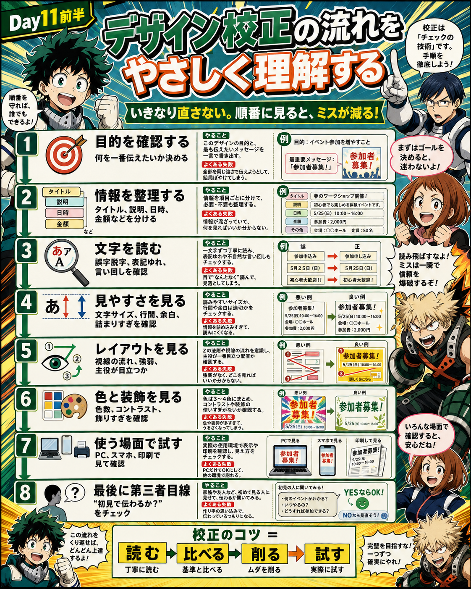
目的 → 情報 → 文字 → 見やすさ → レイアウト → 色・装飾 → 使用環境 → 第三者。順番を守ると「何を直せばいいか」が見つけやすい。
47. 文字と情報の校正｜「正しい」だけでなく「伝わる」まで見る
文章に間違いがなくても、主役が埋もれたり、難しい言葉ばかりだと伝わらない。情報設計では、意味・優先順位・行動導線まで確認する。
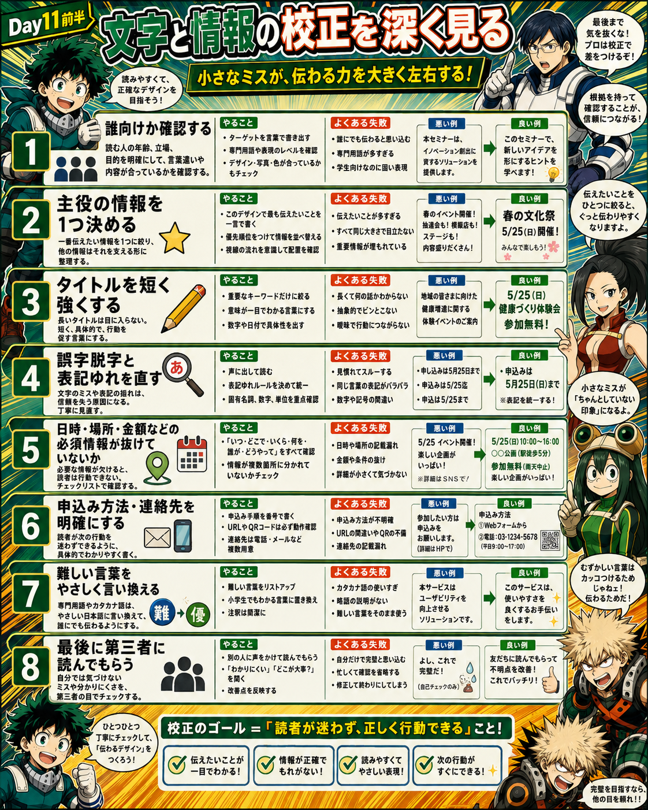
誰向けか → 主役 → タイトル → 誤字表記 → 必須情報 → 申込方法 → やさしい言葉 → 第三者確認まで、文章を深く校正する。
主役は1つ「一番伝えたいこと」を最初に決める。全部を同じ強さにしない。
関連情報を近づける日時・場所・料金など、同じ意味の情報は近くへまとめる。
次の行動を明確に申込・問い合わせ・詳細を見る、など次に何をすればいいか書く。
初心者の失敗：「情報をたくさん入れれば親切」と思って全部載せる。結果として、一番大事な情報が見えなくなる。
48. レイアウト・配色・見やすさの校正｜Before→Afterで考える
見やすさはセンスだけではない。視線、強弱、余白、文字サイズ、色数、コントラストを順番に点検すると原因が見つかる。
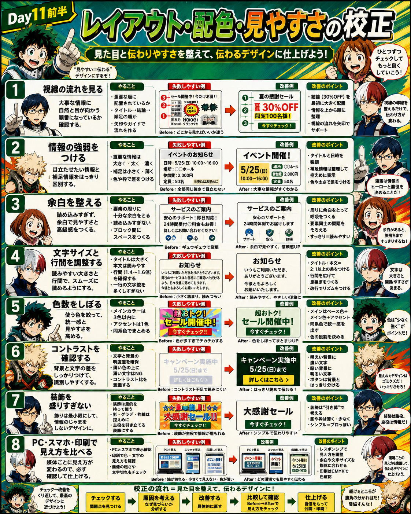
失敗例と改善例を比べて、「どこを直したから見やすくなったか」を言葉にする。
視線の流れタイトル→重要情報→補足→行動の順で自然に見えるか。
強弱と余白全部を目立たせず、大事なものだけ強く。詰めすぎない。
色とコントラスト色数を絞り、背景と文字の差を確保する。
49. AIへの指示は「いい感じ」から卒業する
AIは平均点の案を速く作れるが、曖昧な指示だと平均的な結果になりやすい。人間側がデザイン構造を理解し、具体的な変数として指示する。
曖昧な指示「もっとおしゃれに」「高級感を出して」「いい感じに」。何を変えるかAI任せ。
具体的な指示「背景は白、アクセント1色、角丸12px、見出しを大きく、余白を広く、CTAを1つに」。変更点が明確。
AIへ渡す校正プロンプト
このデザインを初心者にも分かるように校正してください。
次の順番で分析してください。
1. このデザインの目的とターゲット
2. 一番伝えるべき主役の情報
3. 不要・重複している情報
4. 文字サイズ・行間・余白の問題
5. 視線の流れとレイアウトの問題
6. 色数・コントラスト・装飾の問題
7. PC・スマホ・印刷で起こりそうな問題
8. 修正の優先順位（高・中・低）
9. 修正後にもう一度確認する項目
「なぜ直すのか」も、専門用語を使いすぎず説明してください。
50. AI×PCの連携｜AIに全部任せず、役割を分ける
AIはアイデア・分析・改善案が得意。PC上のCanva・Figma・HTML/CSSなどでは、実際の配置・実装・比較・保存・端末確認を行う。役割を分けると迷いにくい。
① 目的をPCで整理原稿・素材・ターゲット
② AIへ分析依頼構造・改善点・案出し
③ デザインツールで制作Canva/Figmaなど
④ AIでレビュー問題点・改善案
⑤ PCで最終確認スマホ・印刷・保存
覚え方：AIは「先生・相談相手・レビュー役」、PCは「実際に作業して確定する机」。
52. 修正ループと最終確認｜直したら終わり、ではない
修正は「直す→終わり」ではなく、問題を分ける → 優先順位をつける → 直す → 前後を比べる → 別の環境で試す → 第三者に見せるまでが1セット。
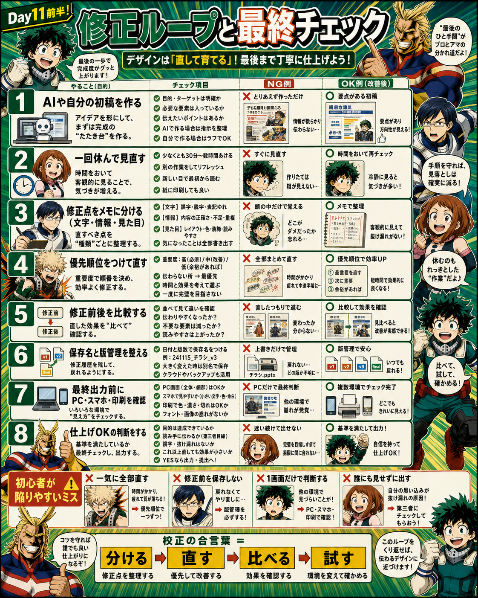
修正前後を比べ、版管理し、PC・スマホ・印刷で確認。最後に「目的を達成しているか」で仕上げを判断する。
比べるBefore/Afterで本当に良くなったか確認。
53. 初心者が陥りやすい失敗｜「一発完成」と「全部修正」を捨てる
失敗① AIへ丸投げ構造を理解せず「いい感じ」に任せると、目的がぼやける。
失敗② 全部を同時に直す何が良くなったか分からなくなる。問題を分けて1つずつ。
失敗③ 情報を詰め込む親切のつもりが主役を消してしまう。
失敗④ PCだけで確認スマホや印刷で崩れることがある。
失敗⑤ 自分だけで判断作った本人は慣れてしまう。第三者の初見が重要。
失敗⑥ 分析せず終了「なぜ良くなった？」を言葉にしないと次へ活かしにくい。
Day11の合言葉：作る → 読む → 比べる → 削る → 試す → また見る。
54. Day11前半｜実習ミッション
MISSION｜AIが作ったデザインを「校正して育てる」
- Canva・Figma・AIなどで簡単なUI、チラシ、カードを1つ作る。
- 目的とターゲットを1行で書く。
- 情報を主役・補足・行動の3グループに分ける。
- 文字、余白、レイアウト、色を順番に確認する。
- AIへ校正プロンプトを渡して改善案をもらう。
- PCで1項目ずつ修正する。
- 修正前と修正後を並べて比較する。
- スマホまたは印刷で確認する。
- 第三者に「何のデザイン？ 次に何をする？」と聞く。
- 答えが迷わず返ってきたら完成。
Day11後半｜AIを「使う」から、実務で速く形にするへ
AIを開いて思いつきで生成するのではなく、目的を決める → 人に頼むように指示を書く → AIでたたき台を作る → PCで整える → 人間が校正するという流れで進める。AIが速さを担当し、人間が意味・品質・最終判断を担当する。
SCENE｜AIは「完成品製造機」ではなく、超高速の制作アシスタント
緑谷出久分析役
最初に「誰に・何を・どうなってほしいか」を決めると、記事も画像も同じ方向を向くよ。
覚え方：AIに頼む前に、人へ仕事を依頼するときの説明を作る。麗日お茶子初心者の疑問
「いい感じにして」やなくて、先に目的と見せ方を決めるんやね。
爆豪勝己失敗指摘
一発生成で完成扱いすんな！ 速く作って、ちゃんと人間が直せ！
① 企画を言葉にする誰向け・何を伝える・どんな行動につなげるかを決める。
② AIで高速にたたき台記事、サムネ、グラフ、バナーなどを短時間で試す。
③ PCと人間で仕上げる文字・レイアウト・事実・ブランド・出力形式を校正する。
56. AI実務デザインの全体ワークフロー｜最初に「仕事の設計図」を作る
元資料では、Geminiなどで記事のたたき台を作り、画像生成AIでサムネ・グラフ・バナーを作り、最後は人間が修正して実務へ持っていく流れが紹介されている。大事なのはツール名より工程を分けること。
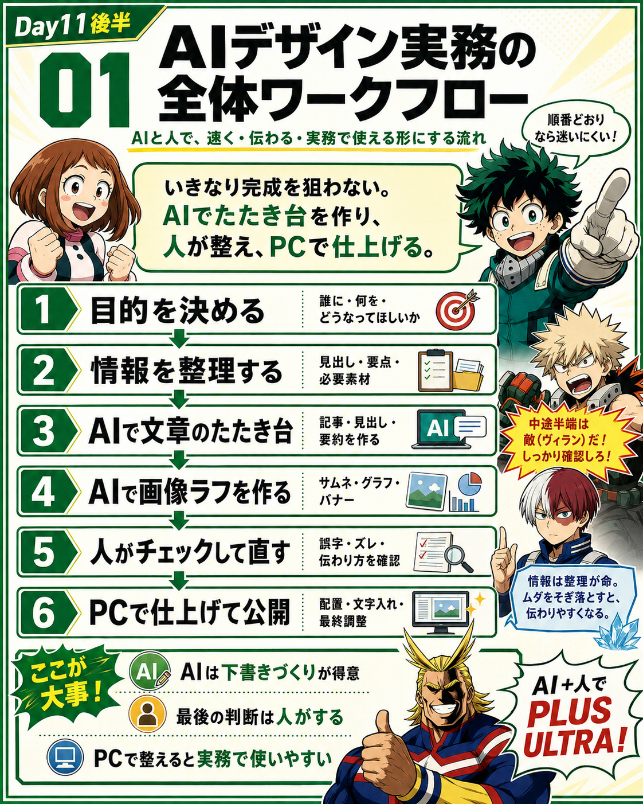
企画 → AIで文章・画像のたたき台 → 人間の校正 → PCで最終調整 → 公開・提案。AIは速さ、人間は判断を担当する。
1 企画読者・目的・ゴール
2 文章構成・見出し・本文
3 画像サムネ・グラフ・バナー
4 校正事実・表現・見やすさ
5 公開note・SNS・会議提案
超初心者向け：最初から完成品を狙わない。「案を作る時間」と「直す時間」を分けると、AIの速さを活かしやすい。
57. AIへ伝わる指示の書き方｜「人に依頼する文章」にする
AIへの指示は、単語をたくさん並べるより、企画書や要件定義のように項目を分ける。元資料では # / ## を使った見出し構造が、情報の階層を伝える方法として紹介されている。
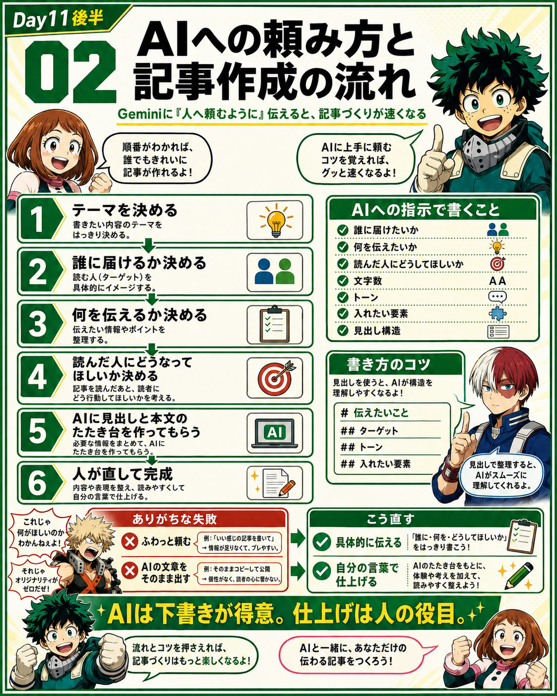
誰に届ける？ 何を伝える？ 読後にどうなってほしい？ を先に書く。トーン・文字数・必須要素も分けて指定する。
そのまま使える超基本の型
# 制作目的
（何のために作る？）
## ターゲット
（誰に届ける？）
## 一番伝えたいこと
（主役メッセージを1つ）
## 読んだ人・見た人にしてほしいこと
（クリック、理解、申込、共有など）
## トーン
（やさしい／信頼感／ビジネス向け など）
## デザイン条件
- ベースカラー：
- メインカラー：
- アクセントカラー：
- フォント：1〜2種類
- 構図：
- 入れてほしい要素：
- 入れないもの：
## 出力してほしいもの
（記事構成／画像案／修正案など）
初心者の失敗：「おしゃれに」「いい感じに」だけではAIが判断する範囲が広すぎる。曖昧な形容詞は、具体的な対象・色・人物・構図・用途へ言い換える。
58. 実務で作る3つの画像｜サムネ・グラフ・誘導バナーを役割で分ける
元資料の題材では、note記事に使う画像を「サムネイル」「データグラフ」「記事末尾の誘導バナー」の3種類に分けている。同じ記事でも、それぞれ目的が違う。
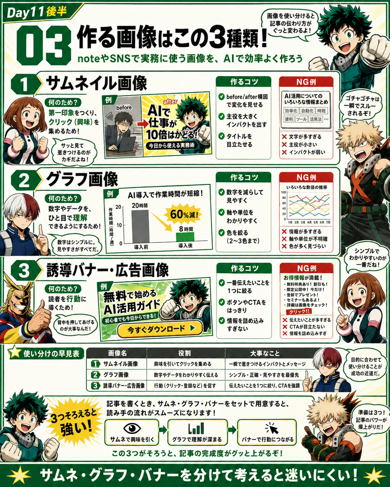
サムネ＝興味を引く、グラフ＝理解を助ける、バナー＝次の行動を促す。役割を混ぜない。
サムネイル記事の入口。内容を全部書くのではなく、「何の記事？」が一瞬で分かる主役を作る。
グラフ数字を正しく、比較しやすく見せる。装飾より、軸・単位・注釈・出典の確認が先。
誘導バナー記事の最後に「次に何をしてほしいか」を1つだけ置く。CTAを迷わせない。
配色の基本：ベース70％・メイン25％・アクセント5％を目安にし、フォントは1〜2種類程度。ブランドカラーがあるならカラーコードで指定するとズレにくい。
59. AI×PCで効率化｜AIに全部やらせず「得意な所だけ任せる」
AIは大量の案・文章のたたき台・画像生成が得意。PC側のCanva、Keynote、Figmaなどでは、文字・配置・サイズ・ブランドルールを人間が確定する。分業すると速さと品質を両立しやすい。
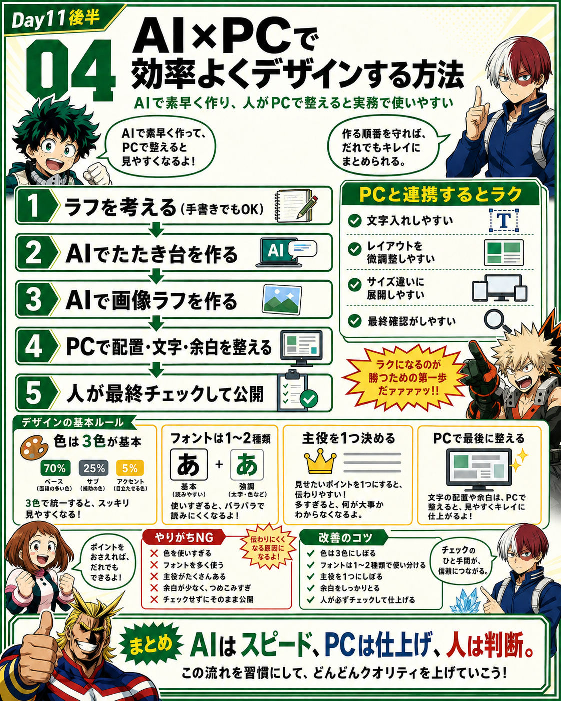
色3色、フォント1〜2種、視線の順番を固定。AIで案を増やし、PCで選択・統一・仕上げを行う。
AIに向いていること- 記事・コピーのたたき台
- 複数の構図案
- 画像生成・修正案
- 短時間のラフ提案
- 別案を大量に試す
人間・PCで確定すること- 目的とターゲット
- 正しい情報・数字
- 文字の読みやすさ
- ブランドカラー・フォント
- 最終レイアウト・公開判断
再現性を上げるコツ：気に入ったプロンプトは「型」にして保存する。漫画広告では、先にキャラクターの見た目を固めてから漫画へ展開すると、キャラの崩れを減らしやすい。
60. ラブアート｜画像を作るだけでなく、キャンバス上で「直して展開する」
元資料ではラブアートを、画像・動画・3D・キャンバス編集まで扱えるAIデザインエージェントとして紹介している。複数モデルを使い分け、生成後に同じ画面で編集・補正・展開できる点が特徴として説明されている。
生成画像・動画・3Dなど。自動選択だけでなく、使いたいモデルを選ぶ方法も紹介されている。
編集背景削除、不要部分の削除、アップスケール、文字の置き換え、画像拡張など。
展開ロゴを商品へ貼るモックアップ、グッズ、商品PR画像、動画などへ広げる。
初心者向けの使い方：①素材を置く → ②1つだけ修正する → ③良ければ別サイズへ展開 → ④最後に文字・ブランド・事実を人間が確認。
料金について：元資料では、本格利用には有料プランが必要と説明されている。実際に使うときは、その時点のプラン・生成回数・利用規約をサービス側で確認する。
61. 初心者の失敗①｜目的が曖昧・一発完成・情報詰め込み
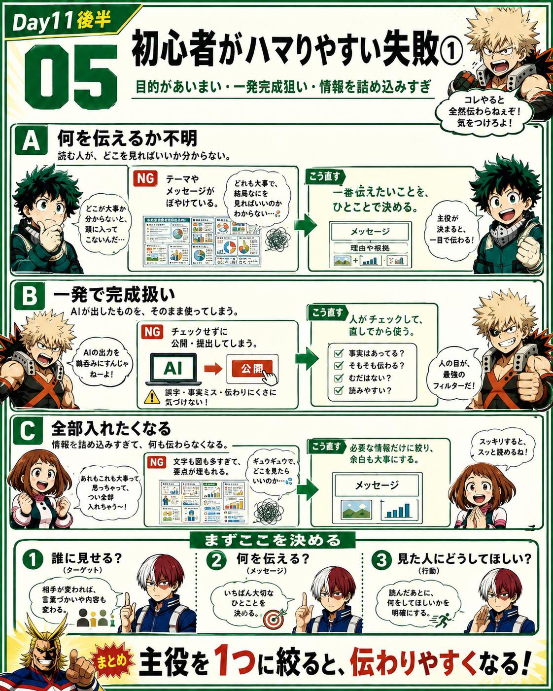
最初に目的・読者・ゴールを決める。情報は主役を1つに絞り、AIの出力は必ず人がチェックする。
NG：何を伝えるか不明生成はできても、読者が何を見ればいいか分からない。
NG：一発で完成扱いAIの細かい誤り、文字、違和感を見逃しやすい。
NG：全部入れる情報量が多いほど親切とは限らない。主役が埋もれる。
62. 初心者の失敗②｜テンプレ化・色迷走・修正履歴に引っ張られる
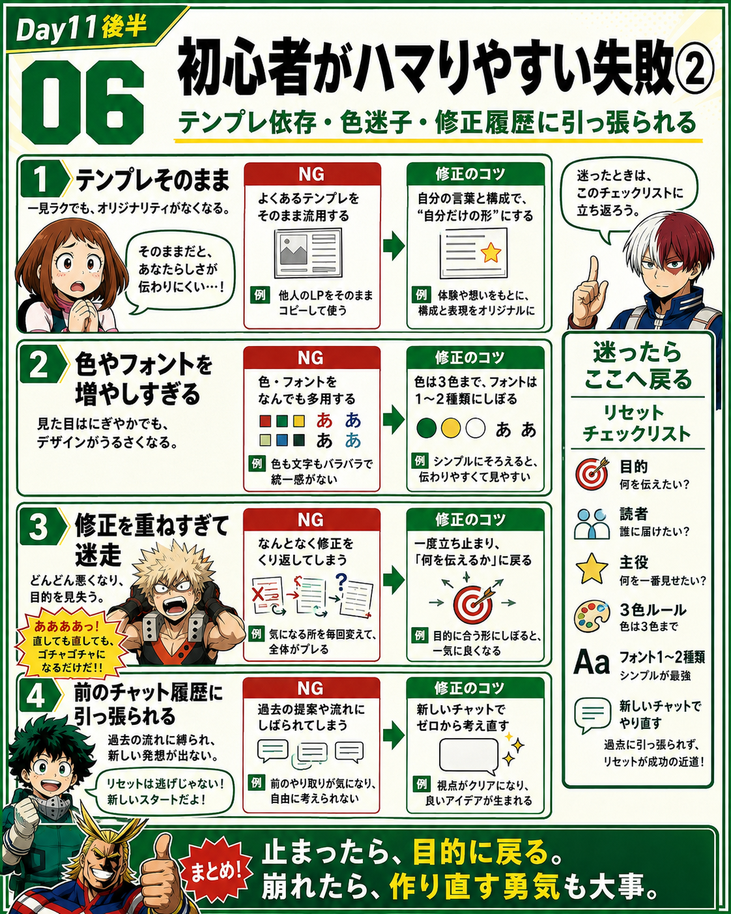
テンプレート依存、色・フォントの増やしすぎ、修正の繰り返しで迷走。止まったら「目的」に戻る。
- テンプレっぽい：自分の構図・色・コピー・写真の条件を追加する。
- 修正が迷走：残したい部分を明示し、それでも崩れるなら新しいチャットでやり直す。
- 画像内文字が不安定：AIで文字を消してスペースを作り、PC側で正しい文字を入れる方法も有効。
- キャラクターが崩れる：先にキャラクター単体を固め、その画像を基準に展開する。
爆豪式ルール：直す場所を一度に増やすな。「人物だけ」「色だけ」「文字だけ」のように1回1テーマで修正する。
64. 最終チェック｜速く作ったからこそ、最後はゆっくり確認する
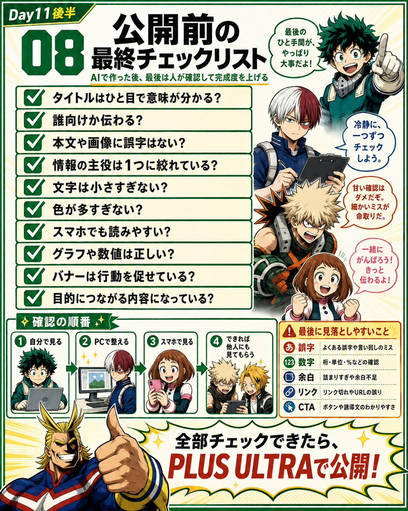
タイトル、本文、サムネ、グラフ、バナー、スマホ表示、目的。AIで速く作った分、最後に人間の目で品質を守る。
事実数字・固有名詞・日付・グラフの軸や単位は正しい？
見やすさスマホでも文字が読める？ 色や装飾が邪魔していない？
さらに確認：クライアント案件や公開物では、利用規約・素材の権利・ブランドガイド・個人情報なども必ず確認する。
65. Day11後半｜実習ミッション
MISSION｜15〜30分で「提案用たたき台」を作り、人間の校正で仕上げる
- テーマを1つ決める。
- 誰に届けるか、何を伝えるか、どうなってほしいかを書く。
- AIに見出し構造で記事のたたき台を作らせる。
- サムネ・グラフ・誘導バナーの目的をそれぞれ決める。
- 配色をベース70％・メイン25％・アクセント5％程度で決める。
- フォントを1〜2種類に絞る。
- AIでラフ画像を生成する。
- PCで文字・配置・ブランド要素を整える。
- 事実・誤字・数字・スマホ表示をチェックする。
- 修正前後を比較し、「なぜ良くなったか」を1つ言葉にする。
合格ライン：「AIで作れた」ではなく、「誰に何を伝えるために、どこを人間が直したか」を説明できればOK。
DAY12 FRONT｜ヒロアカ午後
作る前に「何を・なぜ・どう伝えるか」を設計しよう。
デザイナーの価値は、手を動かして作ることだけじゃない。何を・なぜ・どう伝えるかを考え、構造にし、相手が分かる形に変えること。制作はAIに任せられても、意味の設計は人の仕事だ。
① 見た目より先に意味を決めるブランドは飾りではなく、考え方を伝える道具だと理解する。
② マインドマップで考えを整理するごちゃついた頭の中を、広げる→まとめるで整理する。
③ AIは制作、人は設計AIで時短し、浮いた時間で提案・構成・写真設計までやる。
67. Day12前半｜ブランド設計・思考整理・AI時代の提案力
この回のテーマは「作る人」から「意味を設計する人」へ進むこと。アナログ人間でも大丈夫。順番は、意味を決める → 頭を整理する → AIで作業を短縮する → 人が提案で価値を出す、これだけ。
SCENE 12｜AI時代でも、人の価値はなくならない
麗日お茶子初心者の疑問
AIが作れるなら、人の仕事なくなるんちゃう？
緑谷出久かみ砕き役
むしろ逆だよ。AIは「たたき台」づくりが速い。だから人は、誰に、何を、なぜ、どう伝えるかを考える時間を増やせるんだ。
超かんたんに言うと、「作業」はAI、「意味づけ」は人。轟焦凍要点整理
見た目を作るだけなら埋もれる。意図を説明できる人が強い。
68. ブランディングの本質｜見た目・意味・関係で考える
ブランディングは「おしゃれに見せること」ではない。見た目（表現）・伝わる構造（設計）・相手との信頼（関係）の3つで会社の思想を伝えること。
表現かっこいい、やさしい、誠実など第一印象を作る。
設計何を先に見せるか、どう理解してもらうかを組み立てる。
関係ロゴ・名刺・Webを通じて、会社の考え方や姿勢を伝え、信頼を積む。
要注意：「好き・嫌い」だけで決めると、見た目の話だけで終わる。そのデザインに意味があるかまで見る。

ロゴや名刺は飾りではなく、会社の考え方を会話に乗せるための道具。話せる理由があるデザインは強い。
69. マインドマップ｜頭のごちゃごちゃを見える化する
マインドマップは、中央にテーマを書いて枝を伸ばしながら考えを整理する方法。広げる時とまとめる時を分けるのがコツ。
広げる思いついたことを自由に出す。アイデア出し・感情整理に向く。
まとめる5W2Hなどで分類して、次の行動が見える形にする。
混ぜない広げながらまとめようとすると手が止まる。目的を先に決める。
覚え方：アイデアが欲しいなら「広げる」、企画や提案にするなら「まとめる」。最初から完璧に書こうとしなくていい。

「頭の中を出す」→「必要な物だけ残す」で、考えがかなりスッキリする。ワイヤーや提案の前にやると強い。
70. AIで速く、人が価値を届ける｜デザイナーの価値は設計にある
AIでサイトや画像を量産するだけでは、似たような物が増えるだけ。価値になるのは、ヒアリング内容を整理し、構成を考え、相手に合わせて提案すること。
AIに任せる文字起こし、整理、たたき台、ワイヤー作成など。
人がやる意図の確認、方向性の判断、写真提案、認識合わせ。
差が出る所「ここまで考えてくれたのか」と思われる提案資料を作る。

制作スピードはAIで上がる。でも信頼を生むのは、設計・説明・提案。そこがデザイナーの価値。
71. 実務ワークフロー｜ヒアリング→整理→構成→ワイヤー→写真提案
AI時代の実務フローは、ただ作るだけではなく、聞く → 整える → 見える化する → 提案するまでがセット。
おすすめの流れ
- 打ち合わせを記録する：Zoom録画や文字起こしで「言った・言わない」を防ぐ。
- ヒアリング内容を整理する：質問ごとに回答をまとめ、不足は「要確認」にする。
- マインドマップで構成を作る：いきなりワイヤーに行かず、何を載せるかを可視化する。
- AI用プロンプトに変換する：構成とヒアリング内容を文章化し、ワイヤー作成AIへ渡す。
- ワイヤーを作る：Relume AIなどでサイトマップ・ワイヤーフレームを作る。
- Figmaで調整する：文字や画像、構成を整理して提案しやすくする。
- 写真構成まで提案する：どこで、誰を、どの向きで撮るかまで示す。
ここが差別化：「AIで早く作れました」ではなく、「写真の撮り方まで考えました」と言えると紹介につながりやすい。
72. 失敗①｜見た目だけで決めるブランド設計
見た目だけで「なんか良い」で決めると、あとで説明できず、社内にも伝わらない。
ありがち：ロゴや名刺を「オシャレ」「かわいい」で選び、なぜその形や色なのか誰も言えない。
改善このデザインは何を表し、誰にどう見られたいのかを言葉にする。

デザインは営業トークにもつながる。意味を話せるデザインは、関係づくりまで支えてくれる。
73. 失敗②｜マインドマップが散らかって迷子になる
何でも書き込むと、逆に何が大事か分からなくなる。広げる用と、まとめる用を分ける。
改善テーマを1つ決め、5W2Hやカテゴリで整理する。
合図手が止まったら、「今は広げる時間？ まとめる時間？」と確認する。

「書かないこと」を決めると、情報はかなりまとまる。全部書こうとしないのがコツ。
74. 失敗③｜AIで量産するだけで差が出ない
AIで短時間に作れても、似たものばかりだと選ばれにくい。時短した時間を提案に回す。
改善「この会社ならでは」の考え方や写真構成を加える。
重要AIは手段。価値は、何をなぜそうするかの説明で生まれる。

速く作るだけでは埋もれる。構成・提案・認識合わせまでやって、はじめて差になる。
75. 失敗④｜作るだけで終わり、提案まで設計しない
ヒアリング・構成・写真提案まで見せると、クライアントは安心する。そこが紹介や継続の種になる。
改善どう作るか・何が必要か・次に何をするかまで整理して提案する。

提案まで整っていると、相手は「この人に任せると進めやすい」と感じやすい。これが実務の信頼になる。
76. Day12前半｜実習ミッション
MISSION｜意味を設計してから、AIで形にする
- 自分か架空クライアントを1つ決める。
- 「誰に・何を・なぜ・どうなってほしいか」を4行で書く。
- ブランドの見た目・意味・関係の3つを1行ずつ整理する。
- マインドマップで「広げる版」を1枚書く。
- その後、「まとめる版」を1枚書き、5W2Hで整理する。
- ヒアリング内容をAIに整理させ、不足情報に「要確認」を付ける。
- AIにワイヤーやたたき台用のプロンプトを作らせる。
- 最後に「AIに任せた部分」と「自分が設計した部分」を分けて説明する。
合格ライン：「作れた」だけではなく、なぜその構成にしたかを人に説明できればOK。
78. Day12後半｜SNSデザイン副業は「継続受注の仕組み」を作るゲーム
ここからは「作品を作って終わり」ではなく、1つのスキルを磨く → 数を作る → 営業する → 固定客を増やす → AIで時給を上げるまでを、超初心者でも順番で分かるように整理する。
SCENE 14｜副業は「一発当てる」より「毎月頼まれる」を作る
麗日お茶子初心者の疑問
すごい作品を作れたら、それだけで仕事になるん？
緑谷出久かみ砕き役
作品は必要だけど、それだけじゃ足りないんだ。大事なのは「この人なら毎月頼める」と思ってもらうこと。SNSデザインは継続運用と相性がいいから、固定客を増やすほど安定しやすいよ。
超かんたんに言うと、「作品ゲーム」ではなく「継続受注の仕組みゲーム」。爆豪勝己一言まとめ
作って満足すんな！ 出せ！ 売れ！ 次も頼まれる動きをしろ！
① 1つに絞る最初はSNSデザインなど、武器を1つに決める。
② 継続客を作る単発案件より、毎月依頼される関係を増やす。
③ AIで効率化基礎を身につけた後で、AIを使って制作時間を短縮する。
79. まず1つのスキルに絞る｜最初から全部やらない
ライティング、動画編集、Web、SNS運用…。全部を同時に始めると、どれも浅くなりやすい。最初は「これなら仕事として出せる」武器を1つ作る。
おすすめの入口Canvaで始めやすく、需要も見つけやすいSNSデザイン。
最初の対象YouTubeサムネ、Instagram投稿、LINE配信画像などから1〜2種類。
大事な考え方「全部できる人」になる前に、「これなら頼める人」になる。
初心者の罠：勉強するジャンルだけ増えて、作品も営業もゼロのまま時間が過ぎること。
80. 数を作る｜60〜70点でいいから5〜10作品を完成させる
最初から100点を狙うと止まりやすい。まずは数を作って、手順・速度・判断の型を身体で覚える。
模擬案件でOK実績ゼロなら架空アカウントや架空店舗向けに作る。
5〜10点作る似た物だけではなく、ターゲットや目的を少しずつ変える。
丸パクリはNG参考デザインは構成・余白・視線の流れを学び、文字や素材は自分で変える。
ポイント：ポートフォリオは「作品集」だけではなく、誰のどんな悩みを解決できるかが伝わるように整える。
81. 営業する｜作品を作ったら外へ出す
ポートフォリオを作って待つだけでは、仕事につながりにくい。営業は怖いが、初心者ほど「数を出して改善する」ゲームとして考える。
クラウドソーシングクラウドワークス、ランサーズなどで案件に応募する。
SNS発信Instagramなどで「SNSデザインできます」と作品と一緒に発信する。
支援会社へ入るマーケ支援・LINE運用・YouTube運用会社など、複数案件を持つ会社とつながる。
営業で凹みやすい所：20件出して1件取れるような世界では、返信なしが普通に混ざる。1回断られた＝才能なし、ではない。
82. 固定客を増やす｜月30万円のカギは「単発の数」より「継続」
SNS運用は毎月コンテンツが必要になる。だから、1回の仕事を終えて終わりではなく、次も頼みやすい提案を作ると収入が安定しやすい。
CVR提案から契約へ進む確率。価格・提案・安心感が影響する。
LTV1人のお客さんとどれだけ長く取引できるか。固定客が増えるほど強い。
継続の一言：納品時に「次回はこの切り口も試せます」「来月分もまとめて作れます」と、次の選択肢を見せる。
83. 月30万円を分解する｜単価だけでなく「制作速度」を見る
月30万円を遠い数字のまま見ると動けない。単価 × 枚数 × 継続へ分解する。
目安の考え方1枚3,000円 × 1日3枚 × 30日 ≒ 月27万円。日数や単価を少し上げると30万円が見える。
時間が重要1枚に3時間かかると苦しい。1時間で作れれば時給3,000円になる。
少ない会社でも可能発注量の多い会社や運用支援会社とつながると、取引先数を増やしすぎず回せる。
注意：最初から「安く大量に働き続ける」のが目的ではない。低めの単価は、実績とスピードを作って抜ける期間と考える。
84. AIで時給を上げる｜「自力で納品できる」→「AIで速くする」の順番
AIは敵ではなく効率化の道具。ただし、基礎がないままAIへ丸投げすると、直せない・説明できない・クライアントの要望に対応できない。
AIに任せやすい案出し、コピーのたたき台、バリエーション、素材探しの補助。
人が判断する誰向けか、何を強調するか、読みやすいか、ブランドに合うか。
最終目標同じ3,000円でも制作時間を短くし、時給と提案速度を上げる。
合言葉：AIそのものが敵ではない。AIを使って速く・上手く価値提供できる人が強い。
85. 60日ロードマップ｜会社員のまま小さく副業を回す
いきなり独立しなくていい。まずは本業を守りながら、60日で「作る→見せる→営業→納品→継続」を一周する。
60日の目安
- 1〜7日：武器にするスキルを1つに決める。
- 8〜21日：基礎を学び、5〜10作品作る。
- 22〜30日：誰の悩みを解決できるかが伝わるポートフォリオに整える。
- 31〜40日：案件応募・SNS発信を始める。
- 41〜50日：初案件は連絡・納期・相談の丁寧さを最優先。
- 51〜55日：実績を使って単価アップの準備。
- 56〜60日：リピート提案と営業を並行し、安定する流れを作る。
86. 初心者がハマりやすい4つの失敗
失敗① 勉強を広げすぎるツールやジャンルを増やし続け、何も仕事に出せない。→ 最初の武器を1つに絞る。
失敗② 作品だけ作って営業しない「もっと上手くなってから」と待ち続ける。→ 60〜70点でも出して反応を見る。
失敗③ 単発で終わる毎回ゼロから営業し直す。→ 納品時に次回提案を出し、LTVを伸ばす。
失敗④ AIへ丸投げ速いが、直せない・説明できない。→ 基礎を先に持ち、AIは時短に使う。
もう1つ：安い仕事を永遠に続けない。最初の低単価は「経験・速度・信頼を作る期間」と決める。
87. Day12後半｜実習ミッション
MISSION｜自分の「継続受注の仕組み」を1枚にする
- 最初に磨くスキルを1つ決める。
- そのスキルで作る作品を5〜10個決める。
- 営業先を20件書き出す。
- 1枚あたりの仮単価と制作時間を書く。
- 納品後に出す「次回提案」を1つ作る。
- AIで時短したい工程を3つ書く。
- 60日後に「月いくら・固定客何社」を目標にするか決める。
- 最後に「作品を作るゲームではなく、継続受注の仕組みを作るゲーム」と自分の言葉で説明する。
合格ライン：作品数だけでなく、営業・固定客・制作時間・AI活用までセットで考えられたらOK。
89. Day13｜AI時代のクリエイター価値は「作る力」より「選ぶ・考える・喜ばせる力」
ここでは、AIに作らせる → 人が選ぶ → 理由を考える → 相手が喜ぶ形に整えるまでを、パソコンが苦手な人でも分かるように順番で整理する。結論から言うと、これからの価値は「手数の多さ」よりも意味と体験を設計する力に移っている。
SCENE 15｜AIがすごい時代、人の価値はどこに残る？
麗日お茶子初心者の疑問
AIが画像もサイトも動画も作れるなら、人間のデザイナーはいらんくなるん？
緑谷出久かみ砕き役
なくなるというより、役割が変わるんだ。AIはたくさん作れる。でも何を選ぶか、なぜそれが良いのか、相手にどう届けるかは人が決める必要があるよ。
超かんたんに言うと、「作業マン」より「監督・設計役」が強くなる時代。爆豪勝己一言まとめ
雑に量産して終わるな。選べ、詰めろ、相手に刺さる所まで持ってけ！
① AIは制作係画像・文章・Webのたたき台を速く出してくれる。
② 人は判断係どれを採用し、どう直し、何を伝えるかを決める。
③ 最後は体験設計見た人が安心するか、分かるか、使いやすいかまで考える。
90. AIで制作は激変している｜画像・Web・動画が前よりずっと速い
この数年で、画像生成・デザイン生成・コード生成・動画生成が一気につながってきた。昔なら何日も何週間もかかった作業が、今はたたき台なら短時間で出せることも珍しくない。
需要は増えているYouTube、SNS、商品ページ、SaaS画面など、デザインが必要な場所はむしろ増えている。
信用にも直結今は「見た目が雑＝仕事も雑かも」と思われやすい。デザインは信頼づくりの一部。
変わったのは速度AIで下書きが爆速になった分、人間は“何を採用するか”の比重が上がった。
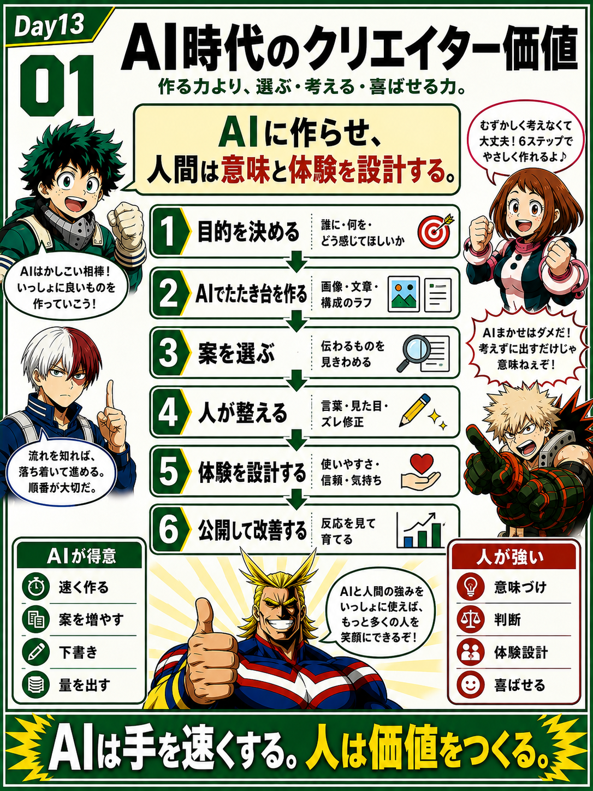
作るだけの価値は下がりやすい。でも「何を作るか」「何を選ぶか」「どう届けるか」を握れる人は強い。
91. AI時代の制作ワークフロー｜AIに作らせ、人間は意味と体験を設計する
おすすめの流れは、目的確認 → AIで案出し → 比較 → 修正指示 → 仕上げ → 相手目線で確認。いきなり「いい感じで作って」で終わらせないのがコツ。
おすすめ6ステップ
- 何のために作るか決める：売るのか、分かりやすくするのか、安心させるのかを先に決める。
- AIにたたき台を作らせる：画像、構成、文章、コードなどをまず出してもらう。
- 並べて比べる：1案で決め打ちせず、複数案から良い所を拾う。
- 言葉で直す：文字が多い、余白が足りない、もっとやさしい印象など具体的に修正する。
- 人間の目で整える：誤字、ズレ、不自然さ、使いにくさをチェックする。
- 相手が喜ぶか確認する：見た人が迷わないか、欲しい情報にすぐ届くかを最後に見る。
大事：AIは速い。でも、目的の設定・比較・採用判断・最終確認を人がやらないと、雑な量産で終わりやすい。
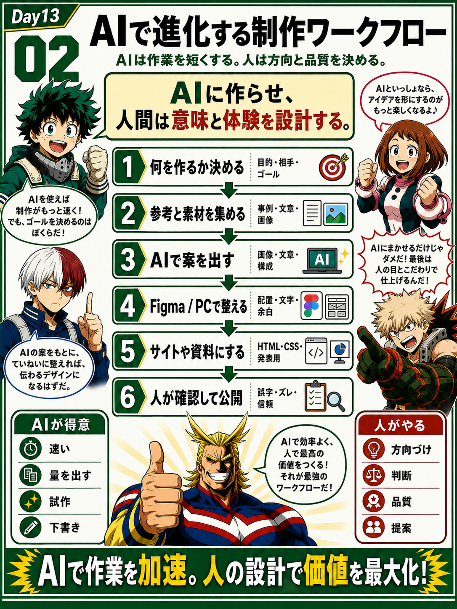
「作る工程」はAIで短縮しやすい。だからこそ、その前後の設計と判断が価値になる。
92. これからの価値は「選ぶ・考える力」｜プロンプト力は検索力に近い
AIを使えば誰でも同じ結果になる…わけではない。実際は、どんな言葉で頼むか・何を比較するか・どこを直すかで差が大きく出る。
言葉の知識構図、配色、余白、カメラ目線、やさしい印象など、言える言葉が増えるほど指示が通りやすい。
選ぶ力AIが10案出しても、1番良い案を選べないと価値になりにくい。比較の目が必要。
考える力「この人に、この順番で、この印象を届けたい」と考えられる人ほど、出力の質が上がる。
半分正解・半分間違い：「AIが全部やってくれる」は半分だけ正しい。仕上がりを見て“変だ”と気づける基礎がないと、直せない。
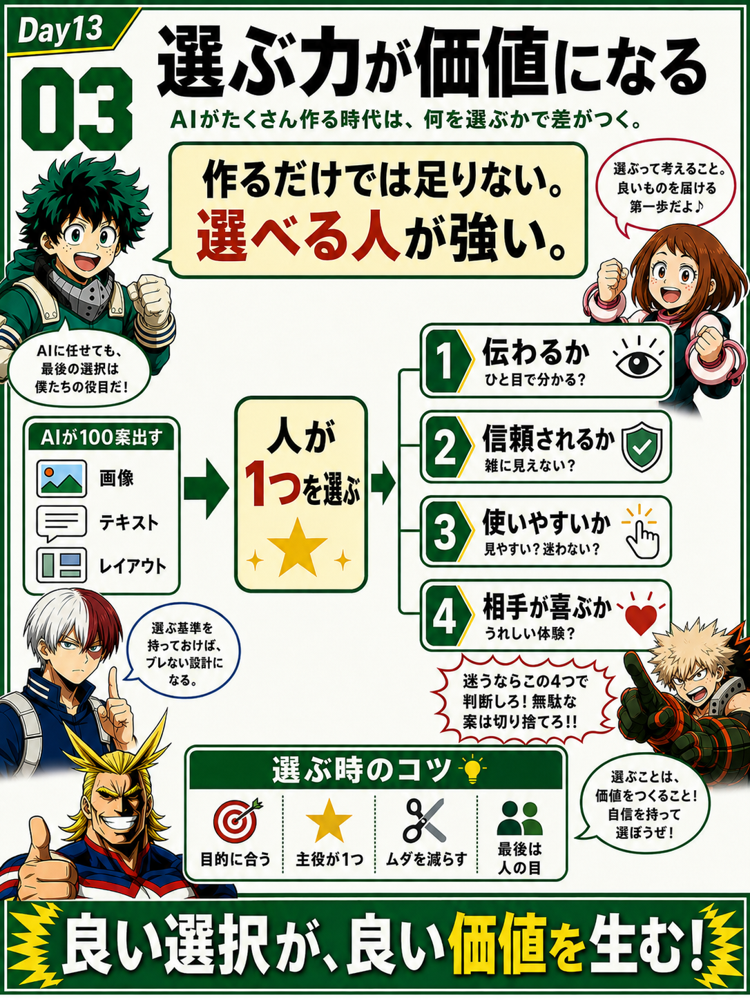
プロンプト力は魔法ではなく、知識・経験・観察力の積み上げ。検索が上手い人に近い感覚で伸びる。
93. 人を喜ばせるUX/UI思考｜最後は「相手への興味」が勝つ
グラフィック、UI、UXでは見るポイントが少し違う。でも共通しているのは、相手がどう感じ、どう動き、どこで困るかに興味を持つこと。
グラフィック見た目の印象や表現力が大きい。理論だけでなく、違和感に気づく感覚も大事。
UI使いやすさや分かりやすさが重要。感性だけでなく、ロジックで説明できると強い。
UXユーザーの不安・本音・喜びを見る力。手法より「人を助けたい気持ち」が土台になる。
言い換えると：良いクリエイターの核は、「すごく見せたい」だけでなく相手を喜ばせたい気持ち。そこがある人は、学びも改善も続きやすい。
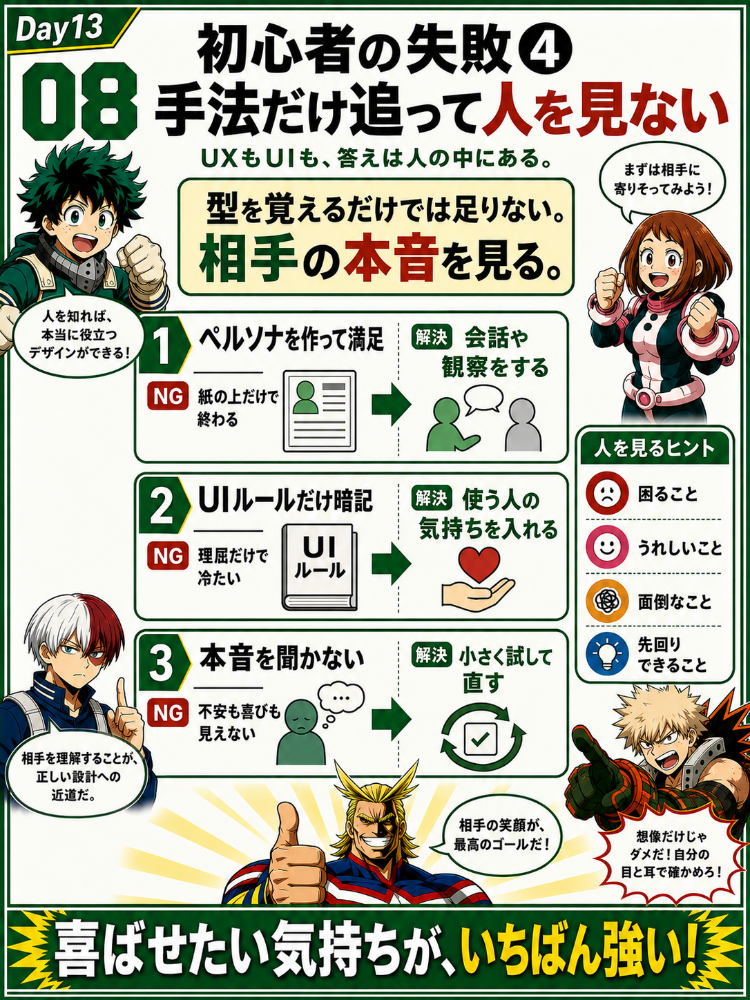
肩書きや道具より先に、「誰がどう困っているか」を見られる人が、体験設計で強くなる。
94. 失敗①｜AIにうまく頼めず「思ってたのと違う」が続く
ふわっと頼むと、ふわっと返ってくる。AIはエスパーではないので、誰向け・何目的・どんな印象かを言葉にする必要がある。
改善「40代女性向け」「安心感」「文字は大きめ」「申込み導線を目立たせる」など具体化する。
コツ一発で当てようとせず、出力を見て追加で直す前提で進める。
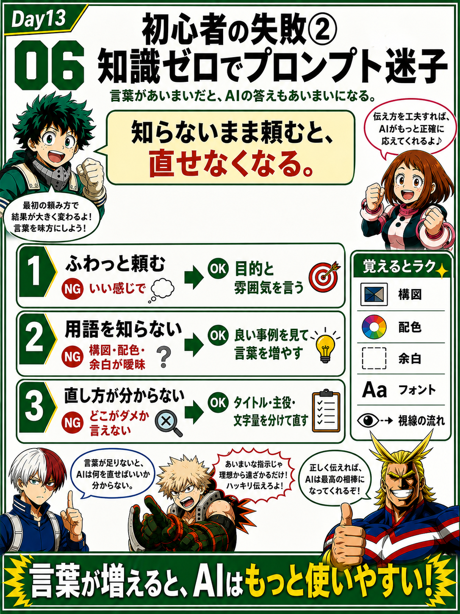
AIに伝える言葉が整うほど、修正回数も減りやすい。まずは“伝わる頼み方”を覚える。
95. 失敗②｜AIへ丸投げして、人間の確認をサボる
AIは速いが、誤字・不自然な日本語・違和感のある構図・使いにくい配置はまだ普通に起きる。最後のひとさじは人が見る。
改善誤字、配置、ブランドのズレ、読みやすさ、使いやすさを最後に点検する。
順番まず自力でも最低限判断できる基礎を持ち、その上でAIを時短に使う。
覚えておきたいこと：AIは能力の代替というより“掛け算”。基礎がある人ほど、AIの恩恵が大きい。
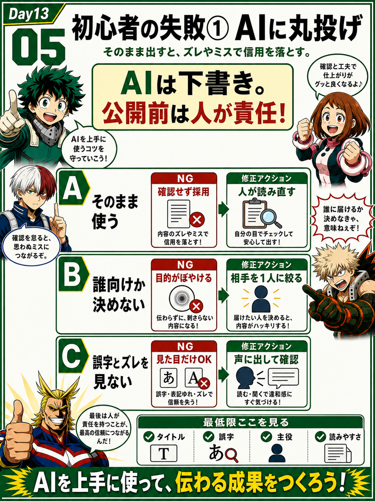
「AIにやらせる」のは正しい。でも「AIに任せきる」のは危ない。判断する人間がいて初めて仕事になる。
96. 失敗③｜相手を見ないで自分の好みだけで作る
かっこいい物を作れても、相手が求める安心感や使いやすさとズレていたら届きにくい。クリエイターは作品づくりだけでなく、相手理解の仕事でもある。
改善誰が見るのか、何に困っているのか、どんな気持ちで来るのかを先に考える。
実務で強い人営業・接客・UXが強い人は、相手の不安を先回りした提案がうまい。
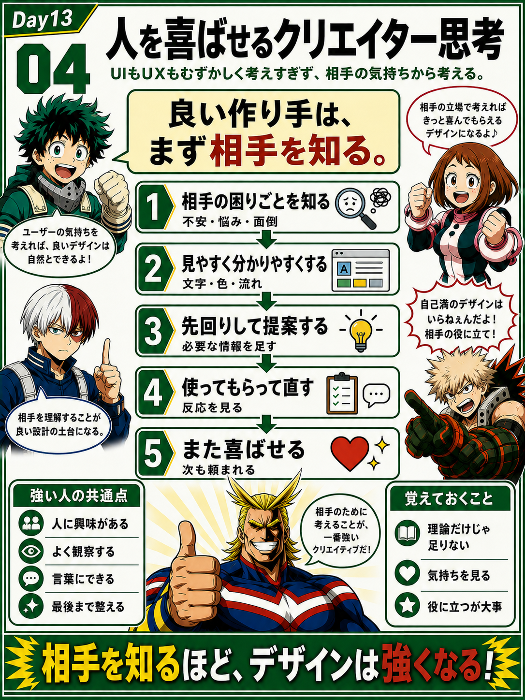
良い体験は、相手をよく見る所から始まる。ユーザーへの興味が薄いと、表面だけ整えて終わりやすい。
97. 失敗④｜作って終わりで、届く形まで整えない
デザインは作った瞬間に完成ではない。見せ方、説明、導線、確認、納品まで整って初めて「届く仕事」になる。
NG見た目だけ作って、誰にどう見せるかを考えない。
改善使う場面、見る順番、説明のしやすさ、次の行動までセットで考える。
伸びる人「どうしたら相手に伝わるか」まで考え、見せ方の最終調整を続けられる人。
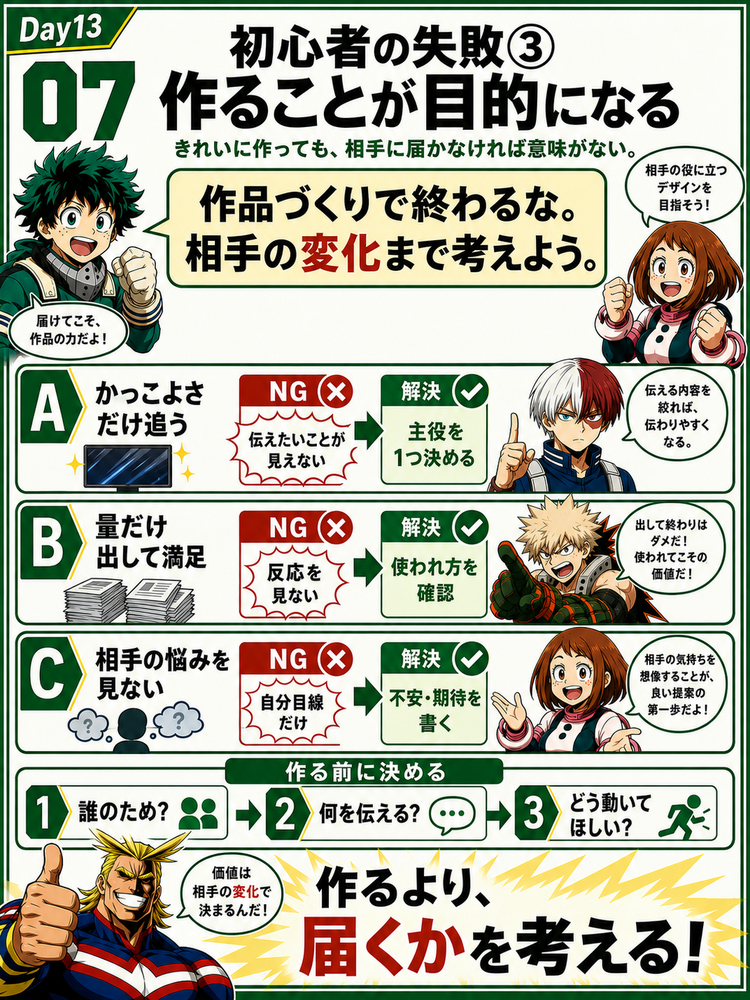
届ける所まで含めてデザイン。作る力だけでなく、伝わる形に整える力が価値になる。
98. Day13｜実習ミッション
MISSION｜AI時代の自分の価値を1枚で整理する
- 自分がAIに任せたい作業を3つ書く。
- 自分が人として判断したい所を3つ書く。
- 「誰を喜ばせたいか」を1人具体的に決める。
- その人の不安・欲しい情報・理想の気持ちを書く。
- AIに頼む時の指示文を1本作る。
- 出てきた案のどこを選び、どこを直すかメモする。
- 最後に「AIに作らせ、人間は意味と体験を設計する」を自分の言葉で説明する。
合格ライン：「AIを使った」で終わらず、何を選び、なぜそう直し、相手にどう喜んでもらうかまで説明できたらOK。